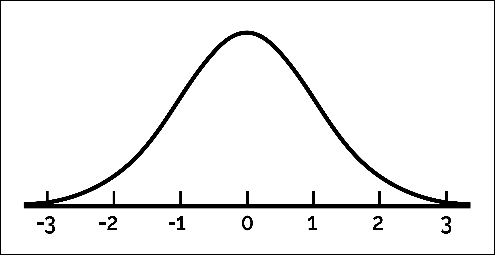
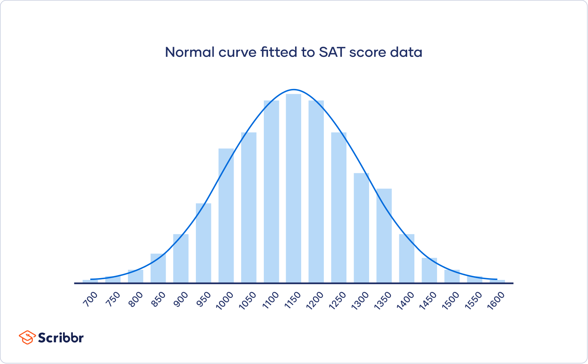

The variance is like an average of the squared differences between each observation and the mean.
In python, the variance is calculated using the function var().
(piston_data .agg("var"))
cycle_time 0.139107
dtype: float64
Interpretation: The variance of the piston cycle times is 0.139. A larger variance means greater dispersion of the data around the mean.
Standard deviation
A drawback of the variance is that it is not on the same scale as the actual observations.
To obtain a measure of spread whose units are the same as those of the sample, we simply take the squared root of the variance
\[
s = \left(\frac{1}{n-1} \sum_{i=1}^{n} (y_i - \bar{y})^2 \right)^{1/2}
\]
This quantity is known as the standard deviation. It is in the same units as the observations.
In python, the standard deviation is calculated using the function std().
(piston_data .agg("std"))
cycle_time 0.372971
dtype: float64
Interpretation: On average, a piston takes 0.652 seconds to complete a cycle, with a variation of \(\pm 0.373\) seconds.
Quartiles
The sample median is the middle number of the ordered data values.
Sample quartiles divide the data as nearly as possible into quarters:
First quartile (\(Q_1\)) is the median of the lower half of the data.
Second quartile (\(Q_2\)) is the median of the data.
Third quartile (\(Q_3\)) is the median of the upper half of the data.
The generalization of quartiles are percentiles or quantiles.
In python, the quartiles are calculated using the function quantile().
# Set the quantiles.set_quantiles = [0.25, 0.5, 0.75]# Compute the quantiles.(piston_data .agg("quantile", q = set_quantiles))
cycle_time
0.25
0.3050
0.50
0.5455
0.75
1.0690
Interpretation:
25% of cycle times are below 0.305 sec.
50% of cycle times are below 0.546 sec.
75% of cycle times are below 1.07 sec.
Maximum and minimum
We compute the maximum and minimum using the functions max() and min(), respectively.
(piston_data .agg("max"))
cycle_time 1.141
dtype: float64
Interpretation: The maximum cycle time is 1.14 seconds.
(piston_data .agg("min"))
cycle_time 0.175
dtype: float64
Interpretation: The minimum cycle time is 0.175 seconds.
Average vs. Median
The average and median estimate the central value of the data in different ways.
The average is the sum of the values divided by the total.
The median is the central value of an ordered set of data.
When do we use the average?
The average is used when the data is symmetrically or evenly distributed and there are no significant outliers.
For example, the height of a large sample of people in a homogeneous population.
When do we use the median?
The median is used when there are outliers that could skew the mean.
For example:
Annual household income in a country (where there are a few billionaires who distort the mean).
House prices in a city (where a few very expensive properties can inflate the mean).
Activity (only mode) Part 1
A company that manufactures capacitor retaining bolts for automobile engines implemented a quality control system. As part of this quality control system, a team of engineers decided to record the number of nonconforming bolts produced each shift.
The file bolts.xlsx contains the number of non-conforming bolts during the last 45 shifts.
Calculates and interprets the average, variance, standard deviation, quartiles, minimum and maximum.
Data visualizations for numerical variables
Principle 1
Formulate the question of interest.
Typical questions about a numeric variable \(X\) are:
What is the shape of the observations of the variable \(X\)?
Are there unusual or atypical observations in the variable \(X\)?
Does the shape of the observations of the variable \(X\) resemble a bell?
Principle 2
Transform data into information.
Two common types of graphs to visualize a numerical variable are:
Histogram.
Box plot.
Basically, they are different ways of visualizing the “shape” or distribution of the variable.
Histogram
Visualizes the distribution of observations, indicating regions where observations are concentrated or sparse.
It is built using a frequency table.
Define a maximum number of intervals or bins (from 5 to 30).
Define the ranges of the intervals.
Group the observations in the interval to which they belong.
Python automatically calculates the frequency table for numerical data. The histogram is a visualization of this table.
To create a histogram, we use the function histplot() from seabron.
plt.figure(figsize=(10, 4))sns.histplot(data = piston_data, x ="cycle_time")plt.show()
Improving the graph
To convey a better message, we apply Principle 3: Apply the principles of graphic design.
Code
plt.figure(figsize=(10, 4))sns.histplot(data = piston_data, x ="cycle_time", edgecolor ="black", color ="pink")plt.title("Histogram of Cycle Time: Data from 50 pistons")plt.xlabel("Cycle Time (seconds)")plt.ylabel("Frequency")plt.show()
It is not the same as a bar chart
With categorical data, a bar chart looks similar to a histogram because it displays the frequency of categories.
However, we cannot interpret the shape of a bar chart in the same way as a histogram.
The frequency of a category is represented by the height of the bar, and the width does not contain any information.
A bar chart will not highlight outliers.
Number of bins
The number of bins is a parameter of the histogram that affects its appearance.
This is set using the argument bins in histplot().
plt.figure(figsize=(5, 3))sns.histplot(data = piston_data, x ="cycle_time", bins =5)plt.show()
The left histogram uses bins = 5, and the right histogram uses bins = 30
In this course, we will use the default number of bins.
What to look for in a histogram?
Symmetry and asymmetry of the distribution
The number, location, and size of high-frequency regions (bins)
Gaps where no values are observed
Unusually large or anomalous values
A bell-shaped form
The obsession with bell curves
The normal distribution is a very important probability distribution in statistics.

It is characterized by a symmetric bell-shaped curve centered around its mean, with the highest probability density at the mean and decreasing symmetrically towards the extremes
Basically, if your observations follow a normal distribution, you can use statistical methods to draw conclusions based on mathematical theory.

What many people don’t know is that this condition is only needed if you have few observations (less than 50).
Boxplot
A boxplot helps us visualize the distribution of observations using quartiles.
It is very effective for detecting “outliers.”
An important component of the boxplot is the interquartile range (IQR), which is the difference between the third quartile and the first quartile (\(Q_3 - Q_1\)).
The interquartile range is the distance needed to encompass the middle half of the data.
Outliers are points that are much larger or smaller than the rest of the sample points.
Outliers may be data entry errors or they may be points that really are different from the rest.
Outliers should not be deleted without considerable thought—sometimes calculations and analyses will be done with and without outliers and then compared.
Boxplot in Python
To create a boxplot in seaborn, use the boxplot() function.
plt.figure(figsize=(5, 4))sns.boxplot(piston_data, y ="cycle_time")plt.show()
If we specify the variable in the x argument, we get a horizontal boxplot.
plt.figure(figsize=(5, 4))sns.boxplot(piston_data, x ="cycle_time")plt.show()
Activity (solo mode) Part 2
The file bolts.xlsx contains the number of non-conforming bolts during the last 45 shifts. Using Python, create the following graphs